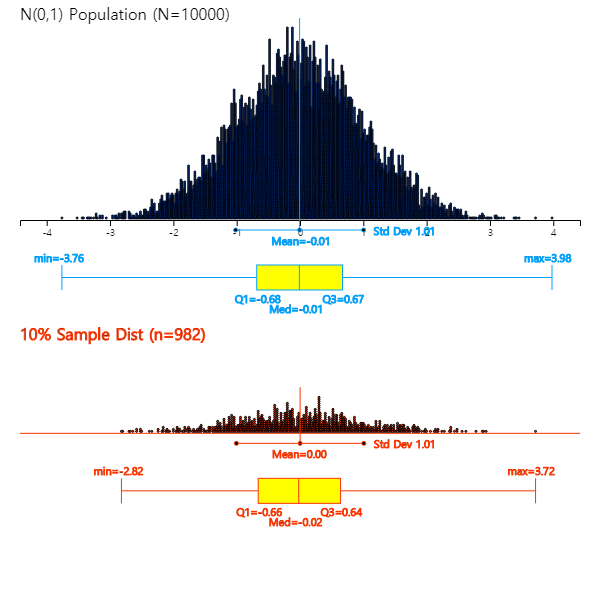
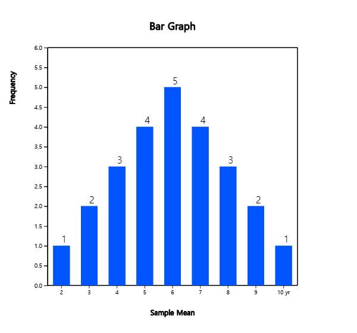
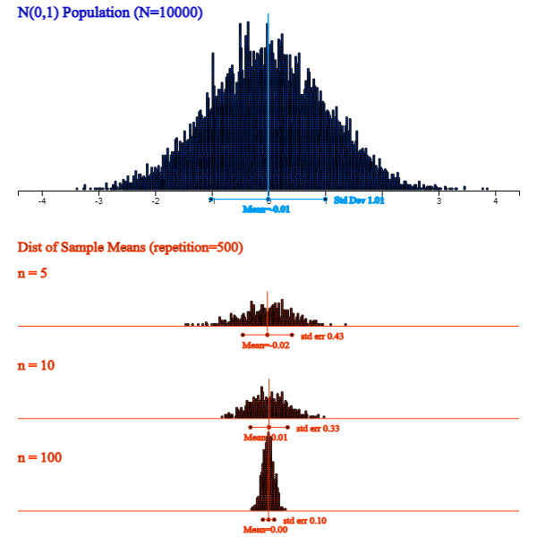

The purpose of statistical experiments or surveys is to find out some information about a population. Information about the population usually refers to a characteristic value of the population, such as the mean and variance which are called parameters. Since it is so difficult or costly to investigate the population parameters, they are usually estimated by using characteristic values of a set of samples such as the sample mean and sample variance. <Figure 6.2.1> is a simulation to show the relationship between population data of size 10,000 and sample data (approximately 10%) using 『eStatU』 which shows characteristic values of a population are similar to characteristic values of a set of samples.

<Figure 6.2.1> Simulation to show the relationship between population data and sample data
Characteristic values of a set of samples are called sample statistic and the distribution of the sample statistic is called a sampling distribution. The sampling distribution identifies the relationship between the sample statistic and the population parameter and it makes possible to estimate and test a population parameter. In this section, let's first look at the sampling distribution of sample means and find out how to estimate the population mean.
6.2.1 Sampling Distribution of Sample Means
The following example is to find out the sampling distribution of sample means.
Example 6.2.1
Suppose there is a population consisting of five salesman from a company. (Although such a small population does not actually need to be sampled, this is an example to illustrate the sampling distribution of sample means). Consider the number of years of service at this company as a characteristic value of the population and data of five salesman are as follows.
6, 2, 4, 8, 10
1) Obtain the mean and variance of this population.
2) Obtain all possible samples of size two by simple random sampling with replacement from this population and calculate means of each sample. In addition, calculate the mean and variance of all these possible sample means and compare them with the mean and variance of the population.
3) Prepare a frequency distribution of all possible sample means and draw a bar graph. Compare this bar graph with the bar graph of the population distribution.
Answer
1) The mean and variance of the population is μ = 6, \( σ^2 \) = 8.
2) The number of all possible samples with replacement is 5 × 5 = 25. Table 6.2.1 shows all possible samples and their sample means (\( \overline x \)).
Table 6.2.1 All possible samples of size 2 with replacement from the population and their sample means
Sample
Sample Mean \( \overline X \)
2, 2
2
2, 4
3
2, 6
4
2, 8
5
2,10
6
4, 2
3
4, 4
4
4, 6
5
4, 8
6
4,10
7
6, 2
4
6, 4
5
6, 6
6
6, 8
7
6,10
8
8, 2
5
8, 4
6
8, 6
7
8, 8
8
8,10
9
10,2
6
10,4
7
10,6
8
10,8
9
10,10
10
Some of these sample means are exactly the same as the population mean μ = 6, but some others such as 2 or 10 are significantly different.
The mean of all possible 25 sample means (indicated by \( μ_{\overline X} \)) in Table 6.2.1 is also 6 and
the variance (indicated by \( σ_{\overline X}^2 \)) is 4 as follows:
What can be observed here is that the mean of all 25 possible sample means is the same as the population mean.
This fact explained that the sample mean \(\small \overline X\) is an unbiased estimator of the population mean μ.
In addition, the variance of the sample means \( σ_{\overline X}^2 \) is the population variance \( σ^2 \) divided by the sample size (\(n\)=2).
3) Table 6.2.2 shows the frequency distribution of sample means in Table 6.2.1. The frequency distribution of all possible sample means is called a sampling distribution of sample means when n = 2. <Figure 6.2.2> shows a bar graph of the population distribution and <Figure 6.2.3> shows the distribution of all possible sample means. As shown in the table, the population mean is 6 and some of sample means are the same or close to the population mean, but some of sample means are much more different from 6. However, you can see that all possible sample means are concentrated around the population mean 6 and, as discussed in 2), the average of all 25 sample means is 6. Also the distribution of all possible sample means is symmetrical about the population mean 6.
Table 6.2.2 Frequency table of sample means
Sample Mean
Frequency
Relative Frequency
2
1
0.04
3
2
0.08
4
3
0.12
5
4
0.16
6
5
0.20
7
4
0.16
8
3
0.12
9
2
0.08
10
1
0.04
25
1.00
<Figure 6.2.2> Population distribution

<Figure 6.2.3> Sampling distribution of ’s
Parameter, Estimator and Estimate
The population mean is a single value, but there are many possible sample means.
The population mean μ is called a parameter, which is a characteristic value of the population,
and the sample mean is a random variable that can have many different values and is usually expressed with a capital letter such as \( \overline X \)
which is called an estimator of the parameter μ. An observed sample mean, marked \( \overline x \) with a lowercase letter, is called an estimate of μ.
An estimator of the population variance \( σ^2 \) is the sample variance \( S^2 \) and its observed value which is an estimate of \( S^2 \) is denoted as \( s^2 \).
The relationship between the population mean and all possible sample means in [Example 6.2.1] is observed even if the population has a different shape of distribution. If the population is very large, it is not possible to find all possible samples as shown in [Example 6.2.1] and to find a distribution of sample means. Therefore, the following theoretical research has been developed.
If a population is normally distributed with \( N(μ, σ^2 ) \),
the distribution of all possible sample means is exactly a normal distribution such as
\( N(μ, \frac {σ^2 }{n} ) \).
If the population is an infinite population with the mean μ and variance \( σ^2 \),
then the distribution of all possible sample means is approximately a normal distribution
such as \( N(μ, \frac {σ^2 }{n} ) \) if the sample size is large enough.
This is referred to as the Central Limit Theorem, which is a key theory in statistics, specifically summarized as follows.
[Theorem 6.2.1] Central Limit Theorem
Suppose a population is not a normal distribution and its mean and variance are μ and \( σ^2 \). If we select samples of size with replacement, the distribution of all possible sample means has following characteristics:
1) The average of all possible sample means, \( μ_{\overline X} \), is equal to the population mean μ. (i.e., \( μ_{\overline X} = μ \) )
2) The variance of all possible sample means, \( σ_{\overline X}^2 \), is the population variance divided by \(n\). (i.e., \( σ_{\overline X}^2 = \frac {σ^2}{n} \) )
3) The distribution of all possible sample means is approximately a normal distribution.
The above facts can be briefly written as \( \overline {X} \sim N(μ, \frac {σ^2}{n} ) \).
The central limit theorem is very important as a theory underlying modern statistics.
<Figure 6.2.4> shows a simulation using 『eStatU』 that, when a population is a normal distribution,
the distribution of sample means is also normal, but variances become smaller as the sample size increases. .

<Figure 6.2.4> Sampling distribution of sample means with different sample sizes when population is not a normal distribution
<Figure 6.2.5> shows a simulation using 『eStatU』 that, although a population is skewed
from its mean, the distribution of sample means is closer to normal as the sample size increases.
<Figure 6.2.5> 『eStatU』 Simulation of the central limit theorem